library(dlnm)
library(ggplot2)
library(dplyr)
k <- 1:16
res_store <- list()
for (i in 1:length(k)) {
chicagoNMMAPS$pm10_laggeg <- lag(chicagoNMMAPS$pm10, n = k[i] - 1)
mgcv::gam(
death ~ s(temp) +
s(time) + s(month) + dow + pm10_laggeg,
data = chicagoNMMAPS, family = "poisson"
) -> tmp
res_store[[i]] <- list(
est = coef(tmp)["pm10_laggeg"],
LL = coef(tmp)["pm10_laggeg"] - 1.96 * summary(tmp)$se["pm10_laggeg"],
UL = coef(tmp)["pm10_laggeg"] + 1.96 * summary(tmp)$se["pm10_laggeg"]
)
}
lapply(res_store, unlist) %>%
do.call(rbind, .) %>%
as_tibble() %>%
mutate(
type =
factor(paste0("lag ", 0:15),
levels = paste0("lag ", 0:15)
)
) -> plotres
ggplot(data = plotres) +
geom_point(aes(x = type, y = est.pm10_laggeg)) +
# geom_line(aes(x=type, y=est.pm10_laggeg, group=1), linetype = "dashed") +
geom_errorbar(aes(x = type, ymin = LL.pm10_laggeg, ymax = UL.pm10_laggeg, width = 0.1)) +
geom_hline(yintercept = 0, col = "red", linetype = "dotted") +
theme_bw() +
ylab("log risk PM10") +
xlab("Lags") -> p1
ggplot(data = plotres) +
geom_point(aes(x = type, y = est.pm10_laggeg)) +
geom_line(aes(x = type, y = est.pm10_laggeg, group = 1)) +
geom_ribbon(aes(x = type, ymin = LL.pm10_laggeg, ymax = UL.pm10_laggeg, group = 1), fill = "blue", alpha = 0.2) +
geom_hline(yintercept = 0, col = "red", linetype = "dotted") +
theme_bw() +
ylab("log risk PM10") +
xlab("Lags") -> p2Advanced Regression: Distributed non-linear lag models and other extensions
Garyfallos Konstantinoudis
Imperial College London
Feb 27, 2024
Overview
Concepts we cover in this lecture:
Distributed lag non-linear models
Cross-basis function
Case studies
Introduction of the problem
An exposure event is frequently associated with a risk lasting for a defined period in the future
The risk at a given time is assumed a result of protracted exposures experienced in the past
Examples include, drugs, carcinogens, etc.
Challenge: The risk should be modelled in terms of contributions depending oni ntensity and timing of the exposure events: bi-dimensional association (interaction).
Example 1: Lung cancer and radon exposure
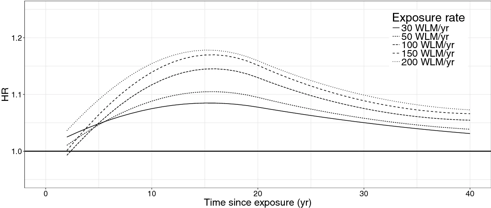Example 2: PM10 in Chicago
Example 2: PM10 in Chicago
What are the main assumptions here?
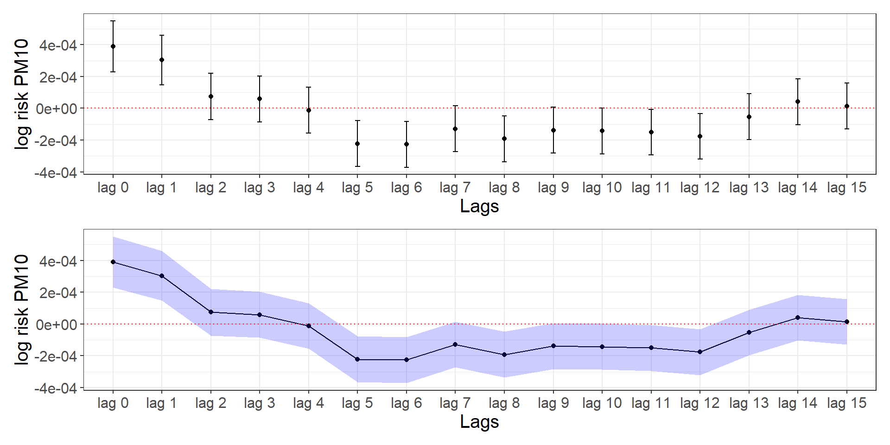Distributed linear lag models
The unconstrained distributed lag model of order \(q\) is:
\[Y_t = \beta_0 + \beta_{10}X_t + \beta_{11}X_{t-1} + \dots+ \beta_{1q}X_{t-q} + \epsilon_t\]
\(\beta_{1\ell}\) is the effect at lag \(\ell=0, 1, \dots q\) and \(\epsilon_t\) an error term.
The overall impact for a unit change in \(X\) is given by \(\sum^q_{\ell=0}\beta_\ell\).
Example 2: PM10 in Chicago
chicagoNMMAPS$pm10_laggeg0 <- lag(chicagoNMMAPS$pm10, n = 0)
chicagoNMMAPS$pm10_laggeg1 <- lag(chicagoNMMAPS$pm10, n = 1)
chicagoNMMAPS$pm10_laggeg2 <- lag(chicagoNMMAPS$pm10, n = 2)
chicagoNMMAPS$pm10_laggeg3 <- lag(chicagoNMMAPS$pm10, n = 3)
mgcv::gam(death ~ s(temp) +
s(time) + s(month) + dow + pm10_laggeg0 + pm10_laggeg1 + pm10_laggeg2 +
pm10_laggeg3, data = chicagoNMMAPS, family = "poisson") %>% summary()
Family: poisson
Link function: log
Formula:
death ~ s(temp) + s(time) + s(month) + dow + pm10_laggeg0 + pm10_laggeg1 +
pm10_laggeg2 + pm10_laggeg3
Parametric coefficients:
Estimate Std. Error z value Pr(>|z|)
(Intercept) 4.707e+00 5.825e-03 808.083 < 2e-16 ***
dowMonday 2.898e-02 5.375e-03 5.391 7.01e-08 ***
dowTuesday 2.326e-02 5.428e-03 4.285 1.82e-05 ***
dowWednesday 5.054e-03 5.447e-03 0.928 0.353470
dowThursday 5.898e-03 5.385e-03 1.095 0.273446
dowFriday 1.294e-02 5.336e-03 2.426 0.015263 *
dowSaturday 1.931e-02 5.273e-03 3.661 0.000251 ***
pm10_laggeg0 3.958e-04 8.997e-05 4.399 1.09e-05 ***
pm10_laggeg1 1.765e-04 9.259e-05 1.907 0.056571 .
pm10_laggeg2 -2.595e-05 9.039e-05 -0.287 0.774090
pm10_laggeg3 1.188e-04 8.350e-05 1.423 0.154770
---
Signif. codes: 0 '***' 0.001 '**' 0.01 '*' 0.05 '.' 0.1 ' ' 1
Approximate significance of smooth terms:
edf Ref.df Chi.sq p-value
s(temp) 8.396 8.876 161.0 <2e-16 ***
s(time) 7.964 8.720 272.9 <2e-16 ***
s(month) 8.273 8.863 364.5 <2e-16 ***
---
Signif. codes: 0 '***' 0.001 '**' 0.01 '*' 0.05 '.' 0.1 ' ' 1
R-sq.(adj) = 0.262 Deviance explained = 28.3%
UBRE = 0.43535 Scale est. = 1 n = 4362Considerations
Easy implementation when lags are few; overparametrized when we want to assess a lot of lags
Collinearity issues: The exposure is likely to be highly correlated with the values of the previous/after days. Weird behaviours in the point estimates (surprising protective effects), variance inflation.
Alternative: to impose some constraints:
A constant effect within lag intervals
Average of the exposures in the previous \(L\) day
Describing the coefficients with a smooth curve using continuous functions such as splines, polynomials, and other basis functions.
The idea: \(\beta_{\ell}\) can be modelled using a basis function.
Polynomial DLM
Let \(\beta_\ell = \sum_j^p\tau_j\ell^j, \;\;\; \ell = 0, \dots, q\) , lets write it for 2 lags using a 3rd degree polynomial to see it explicitly:
\[\begin{align}Y_t &= \beta_0 + \beta_{10}X_t + \beta_{11}X_{t-1} + \beta_{12}X_{t-2} + \epsilon_t\\\beta_{10} &= \tau_0, \; \beta_{11} = \tau_0 + \tau_1 + \tau_2 + \tau_3, \; \beta_{12} = \tau_0 + \tau_1 2 + \tau_2 2^2 + \tau_3 2^3\end{align}\]
and we can modify as per first lecture to model more localized structures using: \(\beta_\ell = \sum_j^p\tau_j\ell^j + \sum_k^K\nu_k(\ell-\kappa_k)^p_+\), thus:
\[\begin{align*}\beta_{10} &= \tau_0 + \nu_1(0-\kappa_1)^3_+ + \dots + \nu_K(0-\kappa_K)^3_+, \\\beta_{11} &= \tau_0 + \tau_1 + \tau_2 + \tau_3 + \nu_1(1-\kappa_1)^3_+ + \dots + \nu_K(1-\kappa_K)^3_+, \\\beta_{12} &= \tau_0 + \tau_1 2 + \tau_2 2^2 + \tau_3 2^3 + \nu_1(2-\kappa_1)^3_+ + \dots + \nu_K(2-\kappa_K)^3_+\end{align*}\]
and similarly we can penalize it can estimate the penalised spline distributed lag estimate of \(\beta_{\ell}\)
Polynomial DLM in R: Chicago
cb1.pm <- crossbasis(chicagoNMMAPS$pm10,
lag = 15, argvar = list(fun = "lin"),
arglag = list(fun = "poly", degree = 4)
)
summary(cb1.pm)CROSSBASIS FUNCTIONS
observations: 5114
range: -3.049835 to 356.1768
lag period: 0 15
total df: 5
BASIS FOR VAR:
fun: lin
intercept: FALSE
BASIS FOR LAG:
fun: poly
degree: 4
scale: 15
intercept: TRUE Polynomial DLM in R: Chicago
model_dlm <- mgcv::gam(death ~ s(temp) + s(time) + s(month) + dow + cb1.pm,
family = poisson(), chicagoNMMAPS
)
pred1.pm <- crosspred(cb1.pm, model_dlm, at = 0:20, bylag = 0.2)
plot(pred1.pm,
ptype = "slices", var = 1, cumul = FALSE, ylab = "RR",
main = "Association with a 1-unit increase in PM10"
)
Polynomial DLM in R: Chicago
Family: poisson
Link function: log
Formula:
death ~ s(temp) + s(time) + s(month) + dow + cb1.pm
Parametric coefficients:
Estimate Std. Error z value Pr(>|z|)
(Intercept) 4.734e+00 1.028e-02 460.746 < 2e-16 ***
dowMonday 3.162e-02 5.933e-03 5.330 9.85e-08 ***
dowTuesday 2.100e-02 5.998e-03 3.501 0.000463 ***
dowWednesday 3.579e-03 6.050e-03 0.592 0.554073
dowThursday 3.367e-03 6.069e-03 0.555 0.579092
dowFriday 1.339e-02 6.054e-03 2.212 0.026984 *
dowSaturday 1.805e-02 5.957e-03 3.031 0.002439 **
cb1.pmv1.l1 3.062e-04 7.862e-05 3.895 9.81e-05 ***
cb1.pmv1.l2 -2.115e-03 1.068e-03 -1.979 0.047789 *
cb1.pmv1.l3 3.966e-03 4.423e-03 0.897 0.369884
cb1.pmv1.l4 -3.477e-03 6.698e-03 -0.519 0.603653
cb1.pmv1.l5 1.348e-03 3.323e-03 0.406 0.684882
---
Signif. codes: 0 '***' 0.001 '**' 0.01 '*' 0.05 '.' 0.1 ' ' 1
Approximate significance of smooth terms:
edf Ref.df Chi.sq p-value
s(temp) 8.584 8.940 165.0 <2e-16 ***
s(time) 7.658 8.530 261.1 <2e-16 ***
s(month) 8.125 8.806 278.3 <2e-16 ***
---
Signif. codes: 0 '***' 0.001 '**' 0.01 '*' 0.05 '.' 0.1 ' ' 1
R-sq.(adj) = 0.267 Deviance explained = 29.1%
UBRE = 0.4727 Scale est. = 1 n = 3505Polynomial DLM in R: Chicago
Retrieve the cumulative effect. What is the interpretation here?
Polynomial DLM in R: Chicago
What is the main assumption here? Can we relax it?
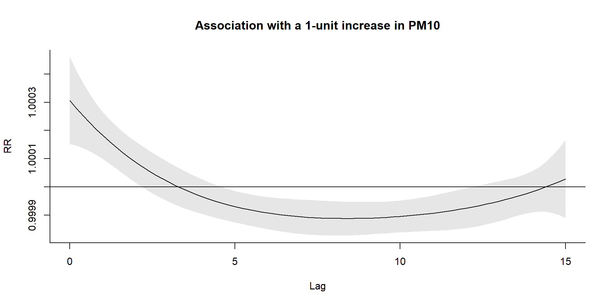Extension to distributed non-linear lag models
We know that temperature and mortality have a U-shape relationship
We know that high temperature has a lag effect on mortality
Can we define models to combine these two components?
The idea: to calculate this bi-dimensional relationship, we need a basis function that combines the basis function in the lag dimension and the basis function in the exposure dimension: Cross-basis function
Linear-by-constant
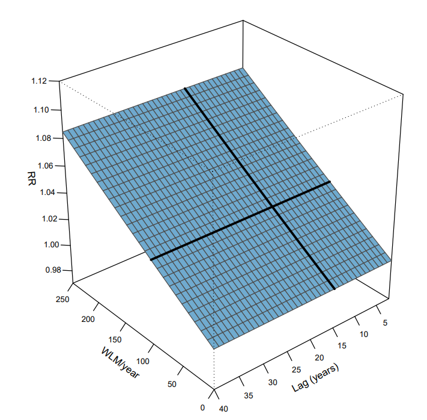Spline-by-constant
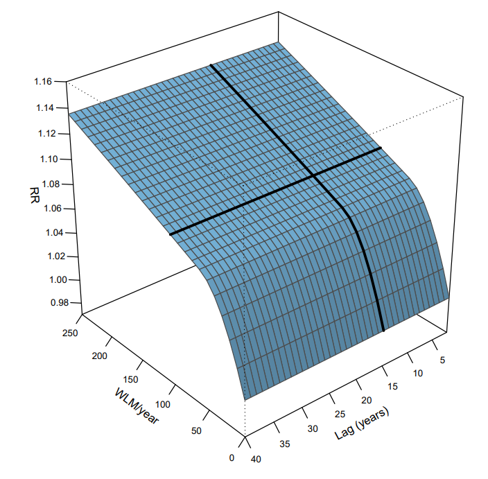Step-by-step
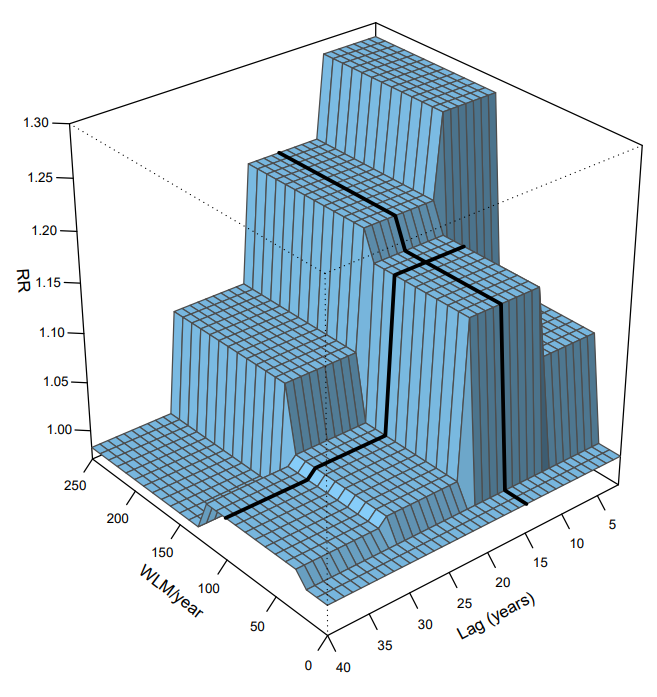Spline-by-spline
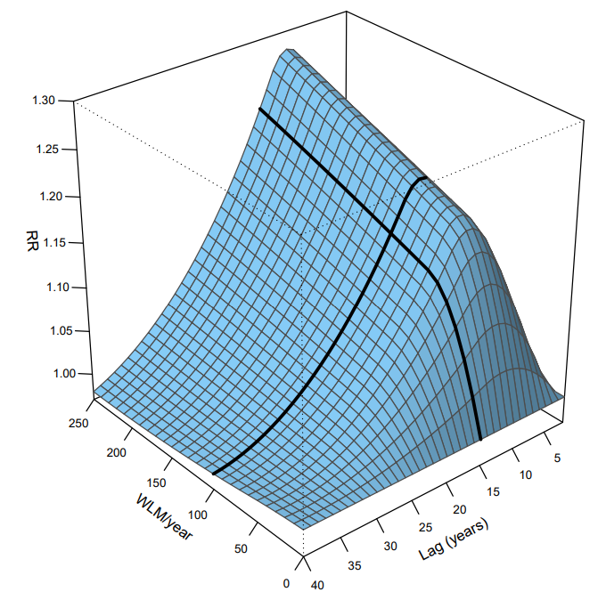Example 3: Temperature in Chicago
cb2.pm <- crossbasis(chicagoNMMAPS$pm10,
lag = 1, argvar = list(fun = "lin"),
arglag = list(fun = "strata")
)
varknots <- equalknots(chicagoNMMAPS$temp, fun = "bs", df = 5, degree = 2)
lagknots <- logknots(10, 3)
cb2.temp <- crossbasis(chicagoNMMAPS$temp, lag = 10, argvar = list(
fun = "bs",
knots = varknots
), arglag = list(knots = lagknots))
model_dlm2 <- mgcv::gam(death ~ cb2.pm + cb2.temp + s(time) + s(month) + dow,
family = poisson(), chicagoNMMAPS
)
pred2.temp <- crosspred(cb2.temp, model_dlm2, cen = 21, by = 1)Example 3: Temperature in Chicago
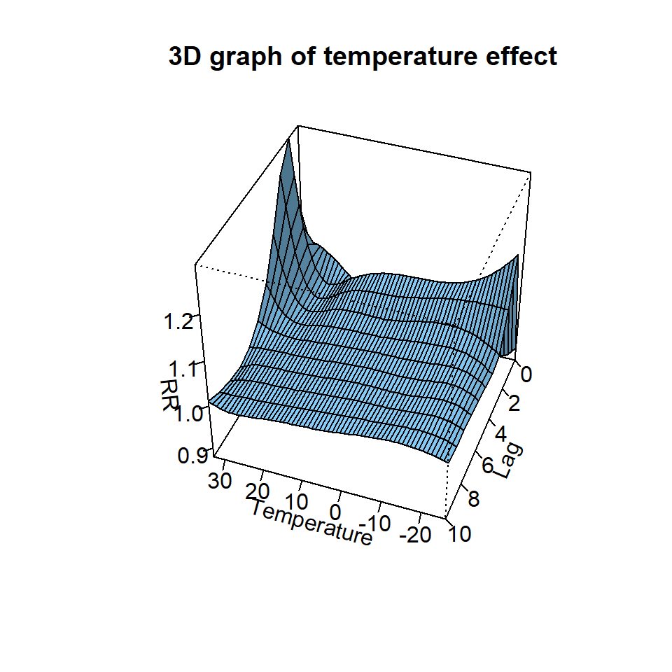Example 3: Temperature in Chicago
Example 3: Temperature in Chicago
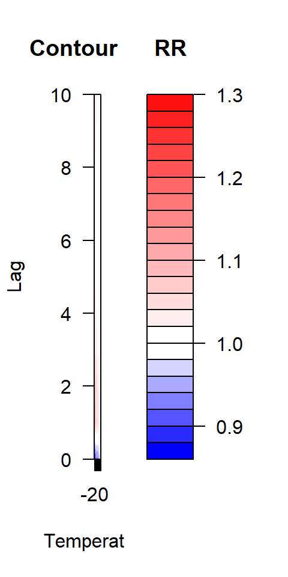Example 3: Temperature in Chicago
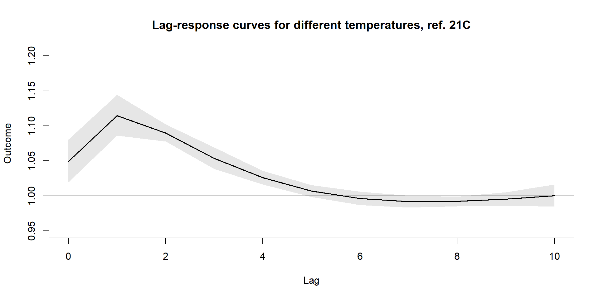Example 3: Temperature in Chicago
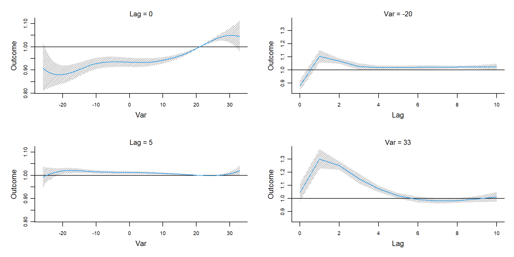Summary
Extend basis function to incorporate the different lags
Distributed lag linear models
Distributed lag non-linear models
Can we expand to space?
Check : https://cran.r-project.org/web/packages/dlnm/ vignettes/dlnmTS.pdf
Questions?
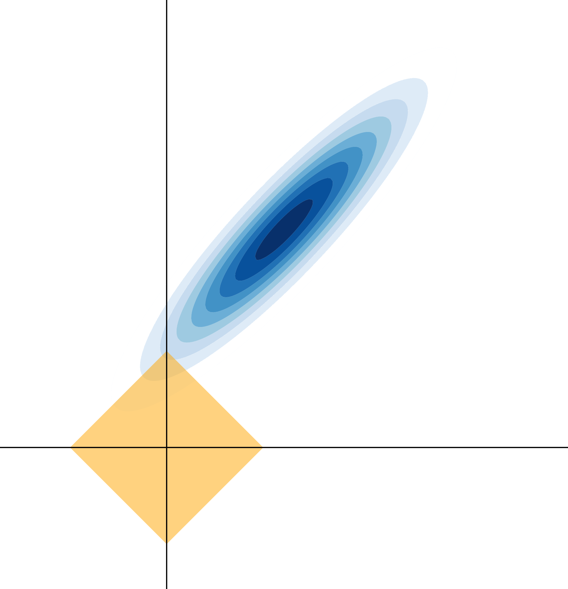